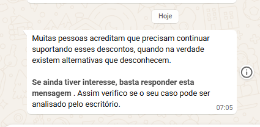

Dra. Carolina, este relatório complementa o de 29/10 e responde, ponto a ponto, à sua mensagem daquele dia. Os testes foram feitos de 29/10 a 03/11, com números de teste da Control Gestão. Os horários vêm do diário da Anna e dos registros de envio do Kommo.
| 1. Primeira mensagem para lead novo Em 30/10, às 10:29, a saudação chegou a um número que não tinha nenhum registro no Kommo, e o lead seguiu a qualificação (seção 2.1). Em 03/11, a própria Anna passou a disparar a saudação, só depois de o card estar pronto (seção 3). Se a saudação não sair em 30 minutos, a Anna avisa a equipe com uma nota no card. Isso foi comprovado em 29/10, às 17:50. | comprovado |
| 2. Régua de follow-ups completa, sem duplicidade Follow 1 a 4 no número (11), com os intervalos reais (seção 2.2). O Follow 2 saiu duplicado em 28/10, antes da correção. Depois dela, o Follow 3, o Follow 4 e os três follow-ups da oferta de horário saíram uma vez cada. | comprovado |
| 3. Pós-reunião: reunião cancelada ou não realizada Antes de enviar, a Anna confere a agenda e a etapa do card. Os três casos foram testados (seção 2.3). | comprovado |
| 4. Reteste das correções "Débito em conta" sem valor: a Anna perguntou o valor e não registrou zero (30/10, 10:33). Duplicidade: nenhum envio repetido depois da correção (pontos 2 e 3). | comprovado |
| 5. Robôs antigos A revisão foi concluída e nenhum robô foi alterado até agora. Na entrada em produção, os robôs antigos serão desligados e as automações passam a rodar na Anna. Isso será testado com um card de teste antes da produção (seção 4). | na entrada em produção |
| 6. Demais regras do processo comercial Renda acima de 15 mil e até 15 mil, memória dos atendimentos anteriores, lead que já fez reunião e follow-up da oferta sem resposta: todos testados (seção 2). A proteção dos cards do Closer foi testada em 23/10: um robô antigo moveu o card para o SDR, e a Anna o devolveu ao Closer às 15:10. O treinamento com as conversas de setembro e outubro está pendente (seção 6). | comprovado |
| 7. Homologação Os testes estão concluídos. Faltam os itens da seção 6. | pendente |
O lead entrou como lead de formulário, sem nenhuma conversa anterior com o escritório. Antes do teste, os registros antigos desse número foram excluídos do Kommo.
| Quando | Quem | O que aconteceu | Saída registrada no WhatsApp |
|---|---|---|---|
| 30/10 10:29 | Anna | Saudação (modelo aprovado "Anna - Primeiro contato v2") para um lead de formulário cujo número não tinha nenhum registro no Kommo | 10:29:04 |
| 30/10 10:32 | lead | "3" → pergunta dos três valores | 10:32:49 |
| 30/10 10:33 | lead | "Bruta 20 mil, líquido 16 mil e tenho débito em conta" → a Anna perguntou o valor do desconto, sem registrar zero | 10:33:33 |
| 30/10 10:33 | lead | "Vou olhar no extrato e te mando depois" → mensagem "aguardo" | 10:33:55 |
| 30/10 10:34 | lead | "O desconto em conta é 7 mil" → pergunta do cheque especial e do cartão | 10:34:23 |
| 30/10 10:34 | lead | "Uso o cheque especial e tenho cartão com limite" → mensagem do alívio; a resposta foi anotada no card | 10:34:47 |
| 30/10 10:35 | lead | "Sim" → encaminhamento para a Dra.; card em SDR › ACIMA DE 15 MIL, com bruta R$ 20.000, líquido R$ 16.000 e desconto R$ 7.000 | 10:35:13 |
| 30/10 11:10 | Anna | Oferta de horário (renda acima de 15 mil). O lead não respondeu mais. | 11:10:06 |
| 30/10 13:15 | Anna | Follow-up de 2 h da oferta: "Ainda não tive sua confirmação sobre o horário…" | 13:15:04 |
| 31/10 11:15 | Anna | Follow-up de 24 h da oferta | 11:15:05 |
| 01/11 11:15 | Anna | Follow-up de 48 h, o último. O card ficou na coluna da renda, sem ir para Venda perdida. | 11:15:04 |
| Quando | Quem | O que aconteceu | Saída registrada no WhatsApp |
|---|---|---|---|
| 03/11 09:26 | Anna | Saudação no card novo | 09:26:03 |
| 03/11 10:01 | lead | "3" → memória: "Vi aqui que você já falou com a gente em outubro e, naquela ocasião, informou renda bruta de R$ 20.000, líquido de R$ 16.000 e desconto em conta de R$ 7.000…" | 10:02:05 |
| 03/11 10:03 | lead | "Piorou, minha renda mudou" → pergunta dos três valores | 10:03:31 |
| 03/11 10:03 | lead | "Vou olhar no extrato e te mando depois" → o seu texto novo: "Sem problemas! Aguardo seu retorno… Combinado?" | 10:03:54 |
| 03/11 10:04 | lead | "Combinado" → a Anna não mandou nada e esperou os valores | — |
| 03/11 10:04 | lead | "Bruta 12 mil, líquido 9 mil e desconto em conta de 3 mil" → pergunta do cheque especial e do cartão | 10:04:47 |
| 03/11 10:05 | lead | "Uso o cheque especial" → mensagem do alívio | 10:05:15 |
| 03/11 10:07 | lead | "Sim" → renda até 15 mil: sem oferta de reunião, com a tag "ANNA renda até 15k" e o card na coluna da renda | 10:07:10 |
O lead escreveu em 26/10 e não respondeu mais.
| Quando | Quem | O que aconteceu | Saída registrada no WhatsApp |
|---|---|---|---|
| 27/10 07:00 | Anna | Follow 1 | 07:00:09 |
| 28/10 07:00 | Anna | Follow 2, fora da janela de 24 h. Saiu duas vezes, antes da correção. | 07:00:04 e 07:00:14 |
| 30/10 07:05 | Anna | Follow 3, uma vez só (anexo A) | 07:05:06 |
| 02/11 07:10 | Anna | Follow 4, o último: "Como não tive seu retorno, vou encerrar seu atendimento…" | 07:10:03 |
Antes de enviar o "Ontem você esteve em reunião", 23 horas depois, a Anna confere quatro coisas:
Se o cliente faltou, a equipe move o card para "Não compareceu" e a mensagem não sai. A Anna não consegue saber sozinha se o cliente entrou na reunião.
| Quando | Caso | Resultado |
|---|---|---|
| 29/10 16:15 | Reunião apagada da sua agenda | Não enviou. Nota no card: "a reunião não está mais na agenda da Dra." |
| 29/10 16:25 | Reunião mantida na agenda | Enviou "Ontem você esteve em reunião…" (saída às 16:25:04). |
| 30/10 10:10 | Cliente que não compareceu (card em Closer › Não compareceu) | Não enviou. Nota no card: "o card está em Não compareceu". |
| 30/10 10:05 | Lead que já fez reunião volta por um card novo | Nenhuma mensagem. A equipe recebeu tarefa e nota com o histórico do telefone. |
| Data | O que aconteceu | Correção |
|---|---|---|
| 29/10 | O follow-up pós-reunião saiu para uma reunião que tinha sido apagada da agenda. | A Anna confere a agenda e a etapa do card antes de enviar (seção 2.3). |
| 29/10 | O robô antigo "Follow Cliente decisão" mandou o "Ontem você esteve em reunião" pela segunda vez ao número de teste. | Entra na decisão sobre os robôs antigos (seção 4, item 2). |
| 29/10 | O robô de saudação não enviou a mensagem a quem nunca tinha conversado com o escritório. | Faltava marcar a opção "Forçar mensagem" no robô. Com ela marcada, a saudação saiu em 30/10. |
| 03/11 | O robô de saudação da etapa enviava a mensagem 1 segundo depois de o card entrar, antes de o primeiro nome do lead estar preenchido. | A própria Anna dispara a saudação, depois de preencher o nome. Testado em 03/11, às 11:14. |
| 03/11 | Quando o lead volta com o card antigo ainda aberto, a resposta dele caía no card antigo. | A Anna fecha a conversa do card antigo antes da saudação, e a resposta cai no card novo. Testado em 03/11. |
| 03/11 | A memória disse "novembro" para valores informados em outubro. Depois de "Piorou", a pergunta dos valores começava com "Ótimo!". | O mês agora é o do atendimento anterior. Depois de "piorou", a pergunta começa com "Entendi." |
| 03/11 | No exame automático da Anna, em 1 de 3 rodadas, o "Combinado" depois do "aguardo" foi entendido como aceite de horário. | Regra reforçada. O exame passou a ter os casos destes testes: 30 situações, aprovadas em 5 rodadas cada. |
Na entrada em produção, os robôs antigos do Kommo serão desligados, e as automações passam a rodar na Anna. Antes disso, conferimos que tudo o que eles fazem está coberto pela Anna e testamos com um card de teste. Estes são os que hoje interferem no atendimento:
| Robô | O que faz hoje | Na entrada em produção |
|---|---|---|
| 1. SDR RETORNO IMEDIATO | Quando o lead responde, leva o card do Closer para SDR › 5 A 10 MIL | Desligado. A resposta depois da reunião já vai para Retorno imediato, com tarefa. |
| 2. Follow Cliente decisão | 24 h depois da entrada em Cliente decisão, manda "Pergunta reunião" | Desligado. O pós-reunião da Anna substitui. |
| 3. SDR- Alterar etapa plan-Rtrnimed. | Quando o lead responde ou abre conversa nova, move o card para 5 A 10 MIL | Desligado. |
| 4. Fluxo Superendividamento - Vídeo ("Luíza") | Quando um lead encerrado volta a escrever, manda o questionário antigo (12 mensagens) | Desligado. A memória da Anna atende quem volta. |
| 5. horário de funcionamento | Continua rodando em 166 conversas e manda o aviso de horário quando o lead escreve fora do expediente | Conversas encerradas e robô desligado. |
| 6. Robô de saudação da etapa Contato inicial (criado para os testes) | Manda a saudação quando o card entra na etapa | Desligado. A saudação é disparada pela Anna. |
Com a sua aprovação, desligamos os robôs antigos, testamos com um card de teste e combinamos a data da homologação.

Control Gestão · 03/11/2026